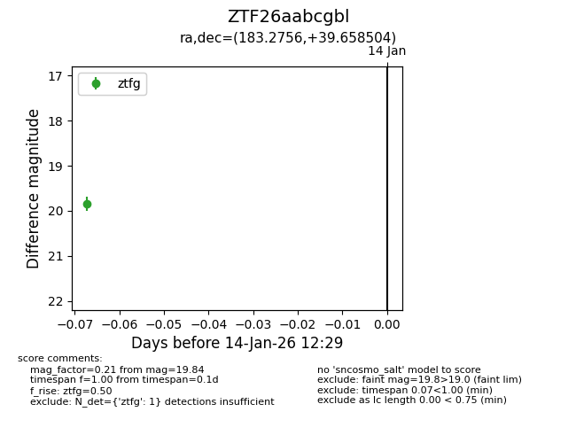
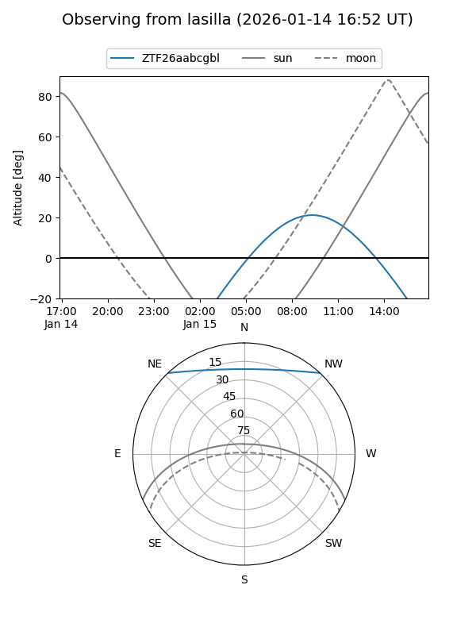
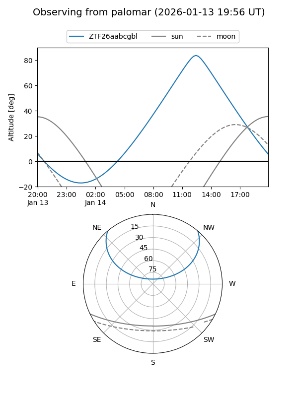

ZTF26aabcgbl
Target ZTF26aabcgbl at 2026-01-14 12:30
Aliases and brokers:
FINK: link
Lasair: link
ALeRCE: link
alt names
ZTF26aabcgbl (ztf,fink_ztf)
Coordinates:
equatorial (ra, dec) = 183.2756,+39.65850
equatorial (HMS+DMS) = 12:13:06.13,+39:39:30.61
galactic (l, b) = (152.9490,+75.15413)
Flags:
Photometry:
last ztfg=19.84
1 ztfg detections
Lightcurve

Visibility


Additional plots